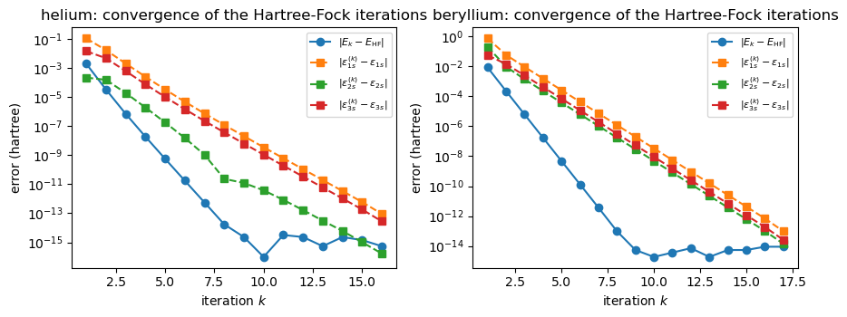
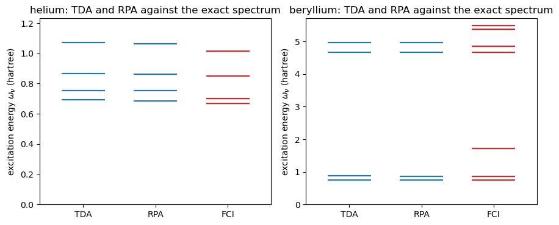
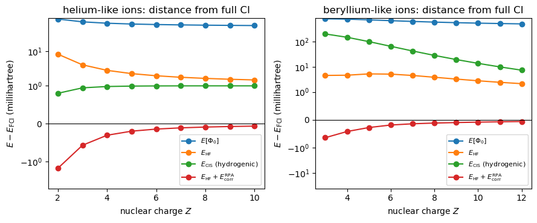

Project 3: helium and beryllium from the reference determinant to Hartree-Fock, configuration interaction, TDA and RPA#
Companion notebook to Appendix A, Project 3, of Quantum mechanics for
many-particle systems. The code is the same as in
BookManybody/BookPrograms/appendixA/atoms.py, which builds on the
FockSpace class of the chapter-3 program wick.py and on the
SelfConsistentField class of the chapter-6 program hartreefock.py; the
notebook runs it section by section.
The project is the classical first exercise of the FYS4480 course: two electrons (helium) and four electrons (beryllium) in the hydrogenic \(1s\), \(2s\) and \(3s\) orbitals of nuclear charge \(Z\), with the Coulomb interaction between the electrons. Six spin-orbitals in all, so that the whole Fock space has \(2^6=64\) states and everything can be checked by brute force. We go through the chain of the book in order:
the basis and its matrix elements (chapter 2);
the Hamiltonian in second quantization, the reference determinant and its energy, the \(1p\)-\(1h\) excitations and the configuration-interaction matrix restricted to singles (chapters 3 and 5);
the full configuration-interaction solution, which is the exact answer in this basis (chapter 5);
the Hartree-Fock equations and their iterative solution (chapter 6);
the Tamm-Dancoff and random-phase approximations on top of the Hartree-Fock determinant (chapter 7).
Atomic units throughout: \(\hbar=m_e=e=1\), energies in hartree (\(1\ \mathrm{E_h}=27.2\) eV).
import sys, os, glob
import numpy as np
import matplotlib.pyplot as plt
# the chapter programs live in BookPrograms/chapterNN and the appendix
# programs in BookPrograms/appendixX; put them all on the path
for _pattern in ("chapter*", "appendix*"):
for _d in sorted(glob.glob(os.path.join("..", "BookManybody",
"BookPrograms", _pattern))):
if _d not in sys.path:
sys.path.insert(0, _d)
import atoms
np.set_printoptions(precision=6, suppress=True, linewidth=120)
1. The basis and its matrix elements#
After the Born-Oppenheimer approximation the Hamiltonian of \(N\) electrons around a nucleus of charge \(Z\) is
with \(x\) collecting space and spin. As single-particle basis we take the hydrogenic \(s\)-wave orbitals \(\varphi_{n00}(r)\chi_{m_s}\) with \(n=1,2,3\), so that \(\hat h_0\) is diagonal with \(\langle p|\hat h_0|p\rangle =-Z^2/2n_p^2\), independent of spin. The radial functions are
and the Coulomb matrix elements factorise into a radial integral and a product of spin deltas,
where \(1/r_>\) is what is left of \(1/r_{12}\) after the angular integration
for \(s\) waves. Every radial integral is a rational number, possibly times
a square root, times \(Z\); the closed forms handed out with the midterm are
stored in atoms.RADIAL_TABLE, and we check a few of them against a direct
two-dimensional quadrature before trusting them.
for key in ((1, 1, 1, 1), (1, 2, 1, 2), (1, 1, 2, 2), (1, 3, 3, 1), (2, 3, 3, 2), (3, 3, 3, 3)):
exact = 2.0 * atoms.RADIAL[key]
numeric = atoms.radial_quadrature(*key, Z=2.0, points=6000)
print(f"<{key[0]}{key[1]}|V|{key[2]}{key[3]}> = {exact:.8f} quadrature {numeric:.8f}"
f" difference {abs(exact - numeric):.1e}")
print()
print("spin-orbital index p = 2(n-1) + s:", ", ".join(f"{p}={atoms.Atom(2, 2).label(p)}" for p in range(6)))
<11|V|11> = 1.25000000 quadrature 1.25000833 difference 8.3e-06
<12|V|12> = 0.41975309 quadrature 0.41975391 difference 8.2e-07
<11|V|22> = 0.04389575 quadrature 0.04389657 difference 8.2e-07
<13|V|31> = 0.01153564 quadrature 0.01153588 difference 2.4e-07
<23|V|32> = 0.01495204 quadrature 0.01495208 difference 3.9e-08
<33|V|33> = 0.13281250 quadrature 0.13281252 difference 1.6e-08
spin-orbital index p = 2(n-1) + s: 0=1s+, 1=1s-, 2=2s+, 3=2s-, 4=3s+, 5=3s-
The spin-orbitals are numbered \(p=2(n-1)+m_s\) with \(m_s=0\) for spin up and
\(1\) for spin down, so that \(0,1\) are \(1s\!\uparrow,1s\!\downarrow\), \(2,3\)
are \(2s\) and \(4,5\) are \(3s\). The antisymmetrised matrix elements
\(\langle pq|\hat v|rs\rangle_{\rm AS}=\langle pq|\hat v|rs\rangle
-\langle pq|\hat v|sr\rangle\) are stored in Atom.v_as. Note how the
exchange term carries a different spin delta: for opposite spins it
vanishes, which is why the \(1s^2\) pair has no exchange energy.
he = atoms.Atom(Z=2, N=2)
be = atoms.Atom(Z=4, N=4)
print("helium: <1s+ 1s-|v|1s+ 1s->_AS =", f"{he.v_as[0, 1, 0, 1]:.6f}",
" <1s+ 1s+|v|1s+ 1s+>_AS =", f"{he.v_as[0, 0, 0, 0]:.6f}")
print("beryllium: <1s+ 2s+|v|1s+ 2s+>_AS =", f"{be.v_as[0, 2, 0, 2]:.6f}",
" <1s+ 2s-|v|1s+ 2s->_AS =", f"{be.v_as[0, 3, 0, 3]:.6f}")
helium: <1s+ 1s-|v|1s+ 1s->_AS = 1.250000 <1s+ 1s+|v|1s+ 1s+>_AS = 0.000000
beryllium: <1s+ 2s+|v|1s+ 2s+>_AS = 0.751715 <1s+ 2s-|v|1s+ 2s->_AS = 0.839506
2. Second quantization: the reference determinant and its excitations#
In second quantization (chapter 3),
and the natural ansatz for the ground state is the determinant that fills the lowest orbitals, \(|c\rangle=a^\dagger_{1s\uparrow}a^\dagger_{1s\downarrow}|0\rangle\) for helium and \(|c\rangle=a^\dagger_{1s\uparrow}a^\dagger_{1s\downarrow} a^\dagger_{2s\uparrow}a^\dagger_{2s\downarrow}|0\rangle\) for beryllium. The Fermi level separates the occupied (hole) orbitals \(i,j,\ldots\) from the unoccupied (particle) orbitals \(m,n,\ldots\), and the one-particle-one-hole excitations \(|\Phi^m_i\rangle=a^\dagger_ma_i|c\rangle\) with the same spin for \(m\) and \(i\) keep \(M_S=0\). The reference energy follows from the normal-ordered Hamiltonian,
with \(\alpha\) the sum of \(-1/2n^2\) over the occupied orbitals and \(\beta\) the sum of the direct minus exchange radial integrals.
Since there are only six spin-orbitals we can also build every operator as
an explicit \(64\times64\) matrix with the FockSpace class of chapter 3
(Section 3.2), and read \(\langle c|\hat H|c\rangle\) off the diagonal. That
is the brute-force check we use throughout.
for atom, name in ((he, "helium"), (be, "beryllium")):
alpha, beta = atom.reference_energy_coefficients()
H = atom.fock_space_hamiltonian()
print(f"{name}: |c> = {atom.determinant_label(atom.reference)}")
print(f" E[Phi_0] = {alpha:+.6f} Z^2 {beta:+.6f} Z = {atom.reference_energy():.6f}")
print(f" 64 x 64 Hamiltonian: symmetric {np.allclose(H, H.T)}, "
f"<c|H|c> = {H[atom.reference, atom.reference]:.6f}, commutes with N: "
f"{np.allclose(H @ np.diag([bin(k).count('1') for k in range(64)]), np.diag([bin(k).count('1') for k in range(64)]) @ H)}")
states, pairs = atom.singles()
print(" 1p-1h states with M_S = 0:",
", ".join(f"a+_{atom.label(m)} a_{atom.label(i)}|c>" for m, i in pairs))
helium: |c> = |1s+ 1s->
E[Phi_0] = -1.000000 Z^2 +0.625000 Z = -2.750000
64 x 64 Hamiltonian: symmetric True, <c|H|c> = -2.750000, commutes with N: True
1p-1h states with M_S = 0: a+_2s+ a_1s+|c>, a+_3s+ a_1s+|c>, a+_2s- a_1s-|c>, a+_3s- a_1s-|c>
beryllium: |c> = |1s+ 1s- 2s+ 2s->
E[Phi_0] = -1.250000 Z^2 +1.571001 Z = -13.715996
64 x 64 Hamiltonian: symmetric True, <c|H|c> = -13.715996, commutes with N: True
1p-1h states with M_S = 0: a+_3s+ a_1s+|c>, a+_3s- a_1s-|c>, a+_3s+ a_2s+|c>, a+_3s- a_2s-|c>
Configuration interaction with singles#
Keeping \(|c\rangle\) and its four spin-conserving singles gives a \(5\times5\) matrix. Its elements follow from the Condon-Slater rules of chapter 3, with \(f_{pq}=\langle p|\hat h_0|q\rangle+\sum_j\langle pj|\hat v|qj\rangle_{\rm AS}\) the Fock operator in the hydrogenic basis:
Atom.cis_closed_form implements these formulas; Atom.cis projects the
\(64\times64\) matrix onto the same states, keeping the signs of the operator
strings \(a^\dagger_ma_i|c\rangle\). The two agree to machine precision, and
the lowest eigenvalue is already below the reference energy: in the
hydrogenic basis the reference couples to the singles, so CIS relaxes the
orbitals a little. (The exact non-relativistic energies with the full
Hamiltonian are \(-2.9037\) for helium and \(-14.6674\) for beryllium; our
basis has no \(p\) orbitals and stops at \(n=3\), so nothing here will reach
them.)
for atom, name in ((he, "helium"), (be, "beryllium")):
H = atom.fock_space_hamiltonian()
E, C, M, states, pairs = atom.cis(H)
M2, _, _ = atom.cis_closed_form()
print(f"{name}: CIS matrix (hydrogenic basis)")
print(np.round(M, 5))
print(f" closed form vs Fock-space projection: {np.abs(M - M2).max():.1e}")
print(f" eigenvalues: {np.round(E, 5)}")
print(f" E_CIS - E[Phi_0] = {E[0] - atom.reference_energy():+.6f}")
print()
helium: CIS matrix (hydrogenic basis)
[[-2.75 0.17871 0.08792 0.17871 0.08792]
[ 0.17871 -2.08025 0.10105 0.0439 0.02245]
[ 0.08792 0.10105 -2.02325 0.02245 0.01154]
[ 0.17871 0.0439 0.02245 -2.08025 0.10105]
[ 0.08792 0.02245 0.01154 0.10105 -2.02325]]
closed form vs Fock-space projection: 4.4e-16
eigenvalues: [-2.83865 -2.16988 -2.13619 -1.98905 -1.82322]
E_CIS - E[Phi_0] = -0.088648
beryllium: CIS matrix (hydrogenic basis)
[[-13.716 0.18915 0.18915 0.44519 0.44519]
[ 0.18915 -9.65515 0.02307 -0.39303 0.00844]
[ 0.18915 0.02307 -9.65515 0.00844 -0.39303]
[ 0.44519 -0.39303 0.00844 -13.68839 0.0299 ]
[ 0.44519 0.00844 -0.39303 0.0299 -13.68839]]
closed form vs Fock-space projection: 7.1e-15
eigenvalues: [-14.36211 -13.7578 -13.05941 -9.63871 -9.58503]
E_CIS - E[Phi_0] = -0.646112
3. Full configuration interaction: the exact answer in this basis#
With six spin-orbitals the \(N\)-particle sector with \(M_S=0\) has only nine determinants for either atom (three spin-up orbitals times three spin-down ones for helium; \(\binom32^2=9\) for beryllium), so the full CI matrix of chapter 5 is a \(9\times9\) block of the \(64\times64\) Hamiltonian. Its lowest eigenvalue is the exact ground-state energy in this basis, the benchmark for everything that follows, and its higher eigenvalues are the exact excitation energies against which TDA and RPA will be measured.
for atom, name in ((he, "helium"), (be, "beryllium")):
H = atom.fock_space_hamiltonian()
E, V, states = atom.fci(H)
print(f"{name}: FCI in the M_S = 0 sector, dimension {len(states)}")
print(" determinants:", ", ".join(atom.determinant_label(s) for s in states))
print(f" E_0 = {E[0]:.6f}; excitation energies "
+ ", ".join(f"{e - E[0]:.4f}" for e in E[1:]))
weights = V[:, 0] ** 2
print(" ground-state weights:", ", ".join(f"{atom.determinant_label(s)} {w:.4f}"
for s, w in zip(states, weights) if w > 1e-3))
helium: FCI in the M_S = 0 sector, dimension 9
determinants: |1s+ 1s->, |1s- 2s+>, |1s+ 2s->, |2s+ 2s->, |1s- 3s+>, |2s- 3s+>, |1s+ 3s->, |2s+ 3s->, |3s+ 3s->
E_0 = -2.839449; excitation energies 0.6696, 0.7031, 0.8504, 1.0144, 2.1205, 2.2705, 2.3210, 2.5297
ground-state weights: |1s+ 1s-> 0.9090, |1s- 2s+> 0.0403, |1s+ 2s-> 0.0403, |1s- 3s+> 0.0050, |1s+ 3s-> 0.0050
beryllium: FCI in the M_S = 0 sector, dimension 9
determinants: |1s+ 1s- 2s+ 2s->, |1s+ 1s- 2s- 3s+>, |1s- 2s+ 2s- 3s+>, |1s+ 1s- 2s+ 3s->, |1s+ 2s+ 2s- 3s->, |1s+ 1s- 3s+ 3s->, |1s- 2s+ 3s+ 3s->, |1s+ 2s- 3s+ 3s->, |2s+ 2s- 3s+ 3s->
E_0 = -14.512907; excitation energies 0.7489, 0.8677, 1.7162, 4.6672, 4.8496, 5.3815, 5.4867, 10.8905
ground-state weights: |1s+ 1s- 2s+ 2s-> 0.3358, |1s+ 1s- 2s- 3s+> 0.2553, |1s- 2s+ 2s- 3s+> 0.0039, |1s+ 1s- 2s+ 3s-> 0.2553, |1s+ 2s+ 2s- 3s-> 0.0039, |1s+ 1s- 3s+ 3s-> 0.1421, |1s- 2s+ 3s+ 3s-> 0.0018, |1s+ 2s- 3s+ 3s-> 0.0018
4. Hartree-Fock#
Expanding the new orbitals in the hydrogenic basis, \(\psi_p=\sum_\lambda C_{p\lambda}\varphi_\lambda\), and minimising \(E[\Phi_0]\) with respect to \(C^*_{p\alpha}\) under the orthonormality constraint gives the Hartree-Fock equations of chapter 6,
For a closed shell the Fock matrix is block diagonal in spin and the two
blocks are identical, so it is enough to solve the \(3\times3\) spatial
problem with the closed-shell Fock matrix
\(F_{ab}=h_{ab}+\sum_{gd}\rho_{gd}[2\langle ag|V|bd\rangle-\langle ag|V|db\rangle]\)
and to expand the result to spin-orbitals afterwards, which is what
Atom.hartree_fock does; Atom.hartree_fock_chapter6 solves the full
\(6\times6\) spin-orbital problem with the SelfConsistentField class of
chapter 6 and must give the same energy. Starting from \(C=1\), the first
iteration diagonalises the Fock matrix built from the hydrogenic
determinant, and the iterations continue until the single-particle energies
stop changing.
fig, axes = plt.subplots(1, 2, figsize=(9.0, 3.6))
for ax, atom, name in zip(axes, (he, be), ("helium", "beryllium")):
hf = atom.hartree_fock(tol=1e-13)
E, eps = hf["energy"], hf["eps_spatial"]
print(f"{name}: converged in {hf['iterations']} iterations")
print(f" E_HF = {E:.8f} epsilon = {np.round(eps, 6)}")
print(f" first iteration: E = {hf['history'][0][1]:.6f}, epsilon = {np.round(hf['history'][0][2], 6)}")
hf6 = atom.hartree_fock_chapter6()
if hf6 is not None:
print(f" chapter-6 SelfConsistentField: E = {hf6['energy']:.8f}, "
f"Brillouin max |f_ai| = {hf6['brillouin']:.1e}")
history = hf["history"][:-1] # the last entry is the converged one itself
iterations = [k for k, _, _ in history]
ax.semilogy(iterations, [abs(e - E) + 1e-16 for _, e, _ in history], "o-", label=r"$|E_k-E_{\rm HF}|$")
for n in range(3):
ax.semilogy(iterations, [abs(ep[n] - eps[n]) + 1e-16 for _, _, ep in history], "s--",
label=rf"$|\varepsilon_{{{n+1}s}}^{{(k)}}-\varepsilon_{{{n+1}s}}|$")
ax.set_xlabel("iteration $k$")
ax.set_ylabel("error (hartree)")
ax.set_title(f"{name}: convergence of the Hartree-Fock iterations")
ax.legend(fontsize=8)
plt.tight_layout()
plt.show()
helium: converged in 17 iterations
E_HF = -2.83109609 epsilon = [-0.888475 0.039422 0.439516]
first iteration: E = -2.829193, epsilon = [-0.783288 0.039634 0.453456]
chapter-6 SelfConsistentField: E = -2.83109609, Brillouin max |f_ai| = 8.3e-14
beryllium: converged in 18 iterations
E_HF = -14.50825244 epsilon = [-4.686982 -0.305266 0.811124]
first iteration: E = -14.499823, epsilon = [-3.950699 -0.10404 0.865689]
chapter-6 SelfConsistentField: E = -14.50825244, Brillouin max |f_ai| = 2.1e-14

The energy converges quadratically in the error of the orbitals – the Hartree-Fock energy is stationary – while the orbital energies converge linearly, which is why the stopping criterion is put on the latter. The converged energy lies below the CIS energy of the hydrogenic basis only for beryllium; for helium the single reference determinant with relaxed orbitals is not as good as the five-determinant CIS wave function built from unrelaxed ones, an illustration that relaxation and correlation are different things.
Brillouin’s theorem and CIS in the Hartree-Fock basis#
Transforming the matrix elements to the Hartree-Fock orbitals and building the CIS matrix again, the coupling between the reference and the singles vanishes: this is Brillouin’s theorem of chapters 5 and 6, and it makes the Hartree-Fock energy the lowest CIS eigenvalue. The FCI energy, on the other hand, is the same in both bases, since a unitary change of the single-particle basis does not change the space spanned by all determinants.
for atom, name in ((he, "helium"), (be, "beryllium")):
hf = atom.hartree_fock()
h, v = atom.transform(hf["C"])
H_hf = atom.fock_space_hamiltonian(h, v)
E, _, M, _, pairs = atom.cis(H_hf)
E_fci_hf = atom.fci(H_hf)[0]
E_fci = atom.fci()[0]
print(f"{name}: CIS in the HF basis")
print(f" |<c|H|Phi_i^m>| = {np.abs(M[0, 1:]).max():.1e} (Brillouin)")
print(f" lowest CIS eigenvalue {E[0]:.8f} = E_HF {hf['energy']:.8f}")
print(f" FCI: hydrogenic basis {E_fci[0]:.8f}, HF basis {E_fci_hf[0]:.8f}")
print(f" correlation energy E_FCI - E_HF = {E_fci[0] - hf['energy']:+.6f}")
helium: CIS in the HF basis
|<c|H|Phi_i^m>| = 8.4e-14 (Brillouin)
lowest CIS eigenvalue -2.83109609 = E_HF -2.83109609
FCI: hydrogenic basis -2.83944883, HF basis -2.83944883
correlation energy E_FCI - E_HF = -0.008353
beryllium: CIS in the HF basis
|<c|H|Phi_i^m>| = 2.1e-14 (Brillouin)
lowest CIS eigenvalue -14.50825244 = E_HF -14.50825244
FCI: hydrogenic basis -14.51290749, HF basis -14.51290749
correlation energy E_FCI - E_HF = -0.004655
5. Extension: the Tamm-Dancoff and random-phase approximations#
The excited states are the subject of chapter 7. With the Hartree-Fock determinant as reference and the particle-hole operators \(a^\dagger_ma_i\), the equation-of-motion method gives the Tamm-Dancoff equation \(A X=\omega X\) and the RPA equation
with the matrix elements in the Hartree-Fock basis. Both \(A\) and \(B\) are defined as double commutators, \(A_{mi,nj}=\langle{\rm HF}|[a^\dagger_ia_m, [\hat H,a^\dagger_na_j]]|{\rm HF}\rangle\) and \(B_{mi,nj}=-\langle{\rm HF}| [a^\dagger_ia_m,[\hat H,a^\dagger_ja_n]]|{\rm HF}\rangle\), and since every operator here is a \(64\times64\) matrix we can evaluate the double commutators literally and compare with the closed forms. \(A\) is the CIS matrix of the singles block measured from \(E_{\rm HF}\), so TDA is CIS for the excited states; RPA adds the backward amplitudes \(Y\), lowers every root, and carries a correlation energy \(E^{\rm RPA}_{\rm corr}=\tfrac12(\sum_\nu\omega_\nu-{\rm Tr}A)\).
results = {}
for atom, name in ((he, "helium"), (be, "beryllium")):
hf = atom.hartree_fock()
res = atom.tda_rpa(hf)
A_dc, B_dc, _ = atom.double_commutators(hf, res["pairs"])
results[name] = (atom, hf, res)
print(f"{name}: {len(res['pairs'])} spin-conserving particle-hole pairs")
print(f" closed-form A vs double commutator: {np.abs(res['A'] - A_dc).max():.1e}, "
f"B: {np.abs(res['B'] - B_dc).max():.1e}")
print(" A =\n", np.round(res["A"], 5))
print(" B =\n", np.round(res["B"], 5))
print(f" stability: min eig(A-B) = {res['stability'][0]:.4f}, min eig(A+B) = {res['stability'][1]:.4f}, "
f"imaginary RPA roots: {res['n_imag']}")
print(f" TDA: {np.round(res['tda'], 5)}")
print(f" RPA: {np.round(res['rpa'], 5)}")
E_fci = atom.fci()[0]
print(f" FCI: {np.round(E_fci[1:] - E_fci[0], 5)}")
print(f" E_corr(RPA) = {res['ecorr']:+.6f}; E_HF + E_corr = {hf['energy'] + res['ecorr']:.6f}, "
f"E_FCI = {E_fci[0]:.6f}, E_FCI - E_HF = {E_fci[0] - hf['energy']:+.6f}")
full = atom.tda_rpa(hf, spin_conserving=False)
print(f" TDA with all {len(full['pairs'])} pairs (spin flips included): {np.round(full['tda'], 5)}")
print()
helium: 4 spin-conserving particle-hole pairs
closed-form A vs double commutator: 8.8e-14, B: 2.8e-17
A =
[[ 0.75419 0.05889 0.00461 -0.02359]
[ 0.05889 0.93868 -0.02359 0.1279 ]
[ 0.00461 -0.02359 0.75419 0.05889]
[-0.02359 0.1279 0.05889 0.93868]]
B =
[[ 0. 0. 0.00461 -0.02359]
[-0. -0. -0.02359 0.1279 ]
[ 0.00461 -0.02359 0. 0. ]
[-0.02359 0.1279 -0. -0. ]]
stability: min eig(A-B) = 0.7370, min eig(A+B) = 0.6034, imaginary RPA roots: 0
TDA: [0.69221 0.75481 0.86815 1.07058]
RPA: [0.68595 0.75396 0.86303 1.06299]
FCI: [0.66957 0.70313 0.8504 1.01443 2.12054 2.2705 2.32096 2.52967]
E_corr(RPA) = -0.009914; E_HF + E_corr = -2.841010, E_FCI = -2.839449, E_FCI - E_HF = -0.008353
TDA with all 8 pairs (spin flips included): [0.69221 0.69221 0.69221 0.75481 0.86815 0.86815 0.86815 1.07058]
beryllium: 4 spin-conserving particle-hole pairs
closed-form A vs double commutator: 7.1e-14, B: 1.4e-17
A =
[[ 4.8166 0.14363 -0.00186 0.03219]
[ 0.14363 4.8166 0.03219 -0.00186]
[-0.00186 0.03219 0.80971 0.06399]
[ 0.03219 -0.00186 0.06399 0.80971]]
B =
[[ 0. 0.14363 0. 0.03219]
[ 0.14363 0. 0.03219 0. ]
[-0. 0.03219 0. 0.06399]
[ 0.03219 -0. 0.06399 0. ]]
stability: min eig(A-B) = 0.8097, min eig(A+B) = 0.6806, imaginary RPA roots: 0
TDA: [0.74542 0.87348 4.67326 4.96045]
RPA: [0.74241 0.87099 4.67087 4.95819]
FCI: [ 0.7489 0.86773 1.71625 4.6672 4.84963 5.3815 5.4867 10.89048]
E_corr(RPA) = -0.005071; E_HF + E_corr = -14.513323, E_FCI = -14.512907, E_FCI - E_HF = -0.004655
TDA with all 8 pairs (spin flips included): [0.74542 0.74542 0.74542 0.87348 4.67326 4.67326 4.67326 4.96045]
Two things are worth noticing. With all eight particle-hole pairs, spin flips included, the TDA roots come in a triply degenerate one and a single one for each spatial excitation: the spin-conserving pairs alone give the \(M_S=0\) members of a triplet and a singlet, and the lowest excitation of either atom is the triplet, as it should be (Hund’s rule). And the third FCI excitation of beryllium, near \(1.7\) hartree, has no TDA or RPA counterpart at all: it is dominated by the double excitation \(2s^2\to3s^2\), which a theory built from single particle-hole pairs cannot describe. The RPA correlation energy, finally, is of the right order but overshoots: the RPA ground-state energy lies below the exact one, because the quasi-boson approximation is not variational.
fig, axes = plt.subplots(1, 2, figsize=(9.0, 3.8))
for ax, name in zip(axes, ("helium", "beryllium")):
atom, hf, res = results[name]
E_fci = atom.fci()[0]
columns = [("TDA", res["tda"]), ("RPA", res["rpa"]), ("FCI", E_fci[1:] - E_fci[0])]
for x, (label, omegas) in enumerate(columns):
for w in omegas:
ax.hlines(w, x - 0.3, x + 0.3, color="C0" if label != "FCI" else "C3", lw=1.6)
ax.set_xticks(range(3))
ax.set_xticklabels([c[0] for c in columns])
ax.set_ylabel(r"excitation energy $\omega_\nu$ (hartree)")
ax.set_title(f"{name}: TDA and RPA against the exact spectrum")
ax.set_xlim(-0.6, 2.6)
ax.set_ylim(0.0, 1.15 * res["tda"].max()) # the exact doubles above this are off scale
plt.tight_layout()
plt.show()

6. The isoelectronic sequences#
Nothing in the construction is specific to \(Z=2\) or \(Z=4\): with \(Z\) as a parameter the same code describes the helium-like ions \({\rm H}^-,{\rm He},{\rm Li}^+,{\rm Be}^{2+},\ldots\) and the beryllium-like ions \({\rm Li}^-,{\rm Be},{\rm B}^+,\ldots\). The one-body energies scale as \(Z^2\) and the interaction as \(Z\), so the reference energy is \(\alpha Z^2+\beta Z\) exactly, and the interaction becomes relatively less important as \(Z\) grows. We plot the distance of each approximation from the FCI energy along the two sequences.
fig, axes = plt.subplots(1, 2, figsize=(9.0, 3.8))
for ax, (N, Zs, name) in zip(axes, ((2, range(2, 11), "helium-like"), (4, range(3, 13), "beryllium-like"))):
rows = []
for Z in Zs:
atom = atoms.Atom(Z, N)
H = atom.fock_space_hamiltonian()
hf = atom.hartree_fock()
res = atom.tda_rpa(hf)
E_fci = atom.fci(H)[0][0]
rows.append((Z, atom.reference_energy() - E_fci, hf["energy"] - E_fci,
atom.cis(H)[0][0] - E_fci, hf["energy"] + res["ecorr"] - E_fci, E_fci))
rows = np.array(rows)
print(f"{name}: Z, E_FCI, and E - E_FCI for the reference, HF, CIS and HF+RPA (millihartree)")
for row in rows:
print(f" {int(row[0]):3d} {row[5]:12.5f} {1e3*row[1]:9.3f} {1e3*row[2]:9.3f} {1e3*row[3]:9.3f} {1e3*row[4]:9.3f}")
for k, label in ((1, r"$E[\Phi_0]$"), (2, r"$E_{\rm HF}$"), (3, r"$E_{\rm CIS}$ (hydrogenic)"), (4, r"$E_{\rm HF}+E^{\rm RPA}_{\rm corr}$")):
ax.plot(rows[:, 0], 1e3 * rows[:, k], "o-", label=label)
ax.axhline(0.0, color="k", lw=0.8)
ax.set_yscale("symlog", linthresh=1.0)
ax.set_xlabel("nuclear charge $Z$")
ax.set_ylabel(r"$E-E_{\rm FCI}$ (millihartree)")
ax.set_title(f"{name} ions: distance from full CI")
ax.legend(fontsize=8)
plt.tight_layout()
plt.show()
helium-like: Z, E_FCI, and E - E_FCI for the reference, HF, CIS and HF+RPA (millihartree)
2 -2.83945 89.449 8.353 0.800 -1.561
3 -7.19898 73.980 4.080 0.944 -0.569
4 -13.56743 67.430 2.814 0.978 -0.305
5 -21.93889 63.886 2.257 0.990 -0.198
6 -32.31168 61.677 1.953 0.994 -0.143
7 -44.68517 60.170 1.764 0.996 -0.111
8 -59.05908 59.078 1.636 0.996 -0.090
9 -75.43325 58.251 1.543 0.996 -0.075
10 -93.80760 57.602 1.474 0.996 -0.064
beryllium-like: Z, E_FCI, and E - E_FCI for the reference, HF, CIS and HF+RPA (millihartree)
3 -7.35608 819.082 4.566 204.862 -0.638
4 -14.51291 796.912 4.655 150.800 -0.416
5 -24.14038 745.380 5.257 101.362 -0.273
6 -36.26515 691.152 5.146 65.936 -0.184
7 -50.89701 644.019 4.547 42.992 -0.139
8 -68.03770 605.713 3.863 28.619 -0.113
9 -87.68615 575.156 3.268 19.588 -0.095
10 -109.84072 550.727 2.795 13.794 -0.080
11 -134.49998 530.992 2.428 9.972 -0.068
12 -161.66282 514.837 2.143 7.379 -0.058

The reference determinant misses a roughly constant amount of energy along each sequence (the interaction matrix elements grow linearly in \(Z\), the correlation energy of a truncated basis tends to a constant), Hartree-Fock recovers most of the missing beryllium energy but only a small part of the helium one, CIS in the unrelaxed basis stays within a millihartree of FCI for helium, and Hartree-Fock plus the RPA correlation energy lands slightly below FCI everywhere.
Summary#
In a basis small enough to be diagonalised by hand we have gone through the whole chain of the book: matrix elements of the Coulomb interaction, the second-quantised Hamiltonian and its reference energy, the configuration-interaction matrix and its full solution, the Hartree-Fock equations and Brillouin’s theorem, and the TDA and RPA excitation spectra against the exact one. Every closed-form expression was checked against the explicit \(64\times64\) matrices of the creation and annihilation operators, which is a habit worth keeping when the bases become too large for the matrices to be built.